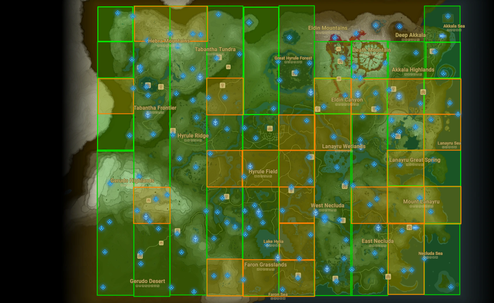
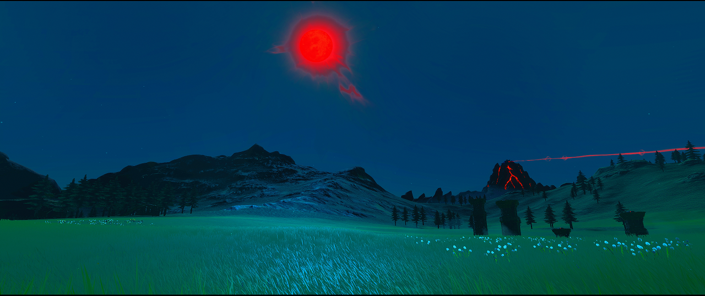

What is Relics of the Past?
Some of you may have seen refrences to this project under the pretense of "Super Hard Botw Mod" or anything related to such title. To put it simply, Relics of the Past takes BOTW and makes it much more difficult.
What's so unique about the project however, is how this difficulty is achieved; Rather than buffing the enemies or just making weapons scarcer, Relics of the Past adds the difficulty through new map changes. To be more specific,
it does so in a similar fashion to how the DLC adds newly placed objects and enemies. Relics does the same but on a full world scale. This in itself creates a brand new experience while staying true to the fundamentals of the original vanilla game.
You can post Feedback in the Calamity Refuge Discord, where the Relics of the Past Community resides! (https://discord.com/invite/FEWRrhq)
New Game Plus: In Relics of the Past, one of the most dynamic aspects of the mod is the scaling rework. The scaling in Relics is designed to maintain difficulty even in the later part of the gameas well as make
the rewards and drops far better. Late game is typically way more challenging and dynamic than the earlier part of the game. New Game Plus takes these late game attributes and starts you of with them at the beginning of the game.
In this mode you will have all the hardest enemies complimented by the best drops and weapons. It makes for a crazy fun and challenging experience.
You are now notified when a the day of a Bloodmoon is. There are new challenges, secrets and rewards that are only available on this day, Use your time wisely!
Welcome to Version 3! It took a lot of hard work to make this version happen! This version of Relics is very unique with what it brings to the table. For the first time we have modified terrain and building collision. This was not fully possible beforehand. This new technology allows us to be much more creative.
So What's New?
This version of Relics focuses more on adding elements of fun! With a multitude of new map editions and new unique challenges and rewards to find. Some nice quality of life changes added such as no longer needing to sit through the shiekah slate pick up cut-scenes, being able to throw weapons faster and so much more!
Version 3 Changes
- Master Cycle given to player when selecting New Game Plus
- Dash Attacking with a Spear can now be jump canceled
- Start up animation for throwing weapons now charges faster Allowing you to throw weapons sooner
- LAVA NOW INSTANT KILLS THE PLAYER. Fairies can still revive you and you will have the usual respawn position.
- Practice room now prompts before entry. Added Maz Koshia music. Fixed mysterious bug where enemies dont load.
- Tons of Map additions:
- More Koroks Removed.
- New Field Mini puzzle in Map section E-3
- Added Approximately 470 new enemies/chests/weapons
- H-6 Fort Hateno Easter egg reworked to be a feature
- Map Sections J-6, I-6, I-7 & I-8 Modified
- Updated Maps: A-3, B-6, D-5, F-7, H-3
- Improved Yiga Inquisitor drops
- Improved Bombtarock drops
- Daybreaker removed from scaling. You can no longer find them lying around in the overworld. Replaced with Royal Guard Shield.
- Auto spawning reworked a bit. Silver enemies now have consistent set spawning but now appear in groups of 2 instead of 4, as opposed to the previous cluttered and inconsistent groupings.
- SWORD TRIALS: CURRENTLY STILL WIP but have been made easier. You are still able to complete them.
- Shiekah Slate pick up and door intros now streamlined. Player will automatically have the slate equipped and the doors will open on their own.
- Champion Weapons have all been revamped:
- Great Eagle Bow: 90 Durability, 4 shot thin spread with a base of 50 Damage. Very powerful bow.
- Scimtar of the Seven: 120 Durability, 64 Base Damage. Summons lightning bolts. Great for small area control and very fun to use.
- DayBreaker: 130 Duability, 69(Intentional Number) Base Guard. 30 Shield Bash damage. Hitbox freezes enemies. Amazing combat tool overall. No shield surf friction or surf damage to shield. DOES NOT auto reflect beams.
- Boulder Breaker: 180 Durability, 85 Base Damage. Shoots a Fireball that does a ton of knockback. Shoots Fireballs
- Boulder Breaker updated to use more functional fireballs. Change is temporary until we find a more suitible projectile
- Lightscale Trident: 140 Durability, 43 Base Damage, Now a Ice Weapon as its base. Shoots a massive blizzwave, great for large crowd control, Absolutely busted damage output when using spear charge attack.
- Patched some crates not dropping anything after changing the drops.
- Max level stealth now has 100% quietness (Vanilla value of 0.3 set to 0.0)
- Master Sword and Corrupted Master Sword now has hammer affect allowing you to smash breakable rocks and metal crates
- Master Sword Beam Damage Increased. Now deals 200 Dmg.
- Malice Lizal is now elemental immune.
- More Relics additions to map data.
- Added French Language support
- Touched up Yiga Inquisitor AI so they don't leave the battle if they cannot navigate to you after a few seconds.
- Blupees now drop a set count of 20 different random rupees but only can be shot once.
- New challenge in Ulria Grotto for "Ke'nai Shakah" Shrine in Akkala and the 4 Islands(Ankel, Knuckel, Davdi and Tingle)
- Added Malice Bokoblin
- Fixed Desert Labrynth side entry being blocked.
- Ancient Armor Defense Rescaled from 4/7/12/18/28 to 4/7/10/14/18
- Guardian Spear++: Can get higher range of Gold attack+ values.
- Ancient Spear: More effective on mosters to match the ancient short sword
- Malice Bokoblin Drops improved
- Malice Guardian Drops improved
- Fixed Silver Hinox Drops not being accurate.
- Small updates to crate drops
- Your now notified when it is the day of a blood moon is.
- YOU MUST NOW COMPLETE THE LOST WOODS QUEST TO OBTAIN MASTER SWORD. IT WILL NOT SPAWN OTHERWISE.
- Many more miscellaneous changes and balancing updates
Map Updates
Version 3 has even more extensive edits to the world. The image below displays a rough view of what the changes are. The orange map areas represent revamped areas that have changes worth seeing. The green areas are just changed compared to vanilla.

The Bloodmoon

You are now notified when a the day of a Bloodmoon is. There are new challenges, secrets and rewards that are only available on this day, Use your time wisely!
Finally, in addition to all of these changes to the mod itself, we are proud to present the Official Relics of the Past Object Map!